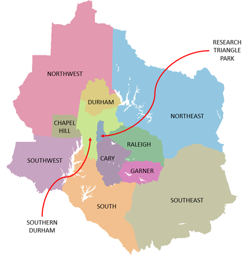
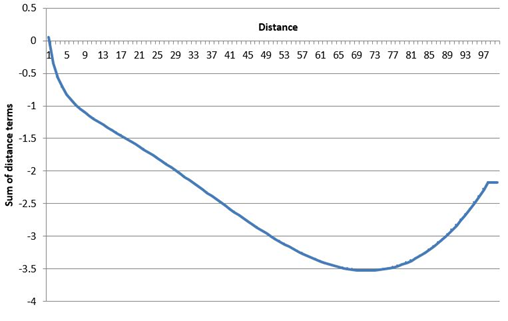

Resident Destination Choice
Intro
This document summarizes the destination choice (DC) models estimated using travel survey and other data from the Triangle region. These models will become a part of the G2 hybrid travel demand model. Within the hybrid framework, destination choice is modeled in the aggregate for each of several trip purposes. Vehicle sufficiency and income are used to further refine the market segments.
General modeling aspects:
- Destinations are predicted at the zone (TAZ) level.
- Based on an analysis of the region, the zones were logically grouped into the following clusters:

- Nested Logit (NL) models were estimated for the home-based trip purposes while multinomial logit (MNL) models were estimated for non-home-based trip purposes. NL models were attempted for the latter set of purposes but did not provide justifiably better models.
- All models were estimated using Larch (Newman, 2021).
A note on model fit
While the fit of a discrete choice model is popularly assessed through the rho-squared and asymptotic rho-squared statistics, they are tricky to interpret in the context of destination choice. The presence of the size term complicates the calculation of the base log-likelihood, LL(0), which forms the reference for the rho-squared calculation. LL(0) is based on the assumption that all alternatives are equally likely. However, the zone alternatives in destination choice are not truly elemental alternatives but are themselves rather the collection of individual employment (say) options available within that zone. The size variable with its default coefficient of 1 must therefore be included when determining LL(0). This provides an automatic “improvement” of LL(0) over the case where the size variable is not included. Consequently, rho-squared falls. This should not be taken as automatic evidence of a poorer model. The selection of the model should still (as always) be based on the reasonableness of its coefficients, their statistical significance, and model sensitivities.
Distance terms
Destination choice models in practice sometimes include distance and its mathematical transforms as part of each zone’s utility equation. While these terms might improve statistical fit, they can cause unintended sensitivities that are counter-intuitive. These effects stem from the non-monotonic shape of the combined distance effect, as illustrated by the example below. Taken from a real-world model, this graph clearly shows how farther zones are less attractive only up to a certain threshold. Beyond that distance, the effect is reversed so that the farthest zones become more attractive (all else being the same).

Such models only remain valid for the range of distances observed in the survey data used for model estimation. Scenarios involving longer distances will produce unintuitive model sensitivities.
Another concern with distance variables is their static nature. Since they are not responsive to congestion, they cannot capture destination choice sensitivity to this key real-world and policy-relevant aspect.
In addition, distance is highly correlated with travel times so that the inclusion of both variables often causes difficulties in model estimation as the algorithm struggles to uniquely split the effects between them.
For the above reasons, the destination choice models for TRM rely on travel times, logsums by mode type, and other skims rather than distance-based variables.
Home-Based Trips
The TRM region features eight home-based trip purposes as revealed by an analysis of the survey. Each purpose’s destination choice model is based on nested logit with zone clusters as nests. Each cluster has its constituent zones under it:

Various model structures and specifications were tried:
- FLAT: No nesting
- SEQUENTIAL CHOICE OF CLUSTER + WITHIN-CLUSTER ZONE
- Sub-model approach 1: Separate sub-model for each cluster
- Sub-model approach 2: Common model across all clusters (with appropriate availabilities)
- NESTED (simultaneous choice of cluster and zone)
The nested specification outperformed all other approaches.
W_HB_W
W_HB_W corresponds to trips that are part of a work tour, have one end at home, and the other end at work. This segment captures trips that directly connect the home and work locations and translates to the HBW trip purpose in traditional models. Destination choice in this context relates to the long-term decision of work location, to which work trips are made with regularity.
Survey data
- Records: trip_type = “W_HB_W_All”
- Sample size: 3,662
Utility specification
TODO add final
Note that the exponentiated values of the attraction coefficients from the above specification will be directly reported in the results sections of each model below.
Estimated coefficients and t statistics
TODO add this and the other model result sections
Notes
- ASCs were estimated for all but one of the clusters. Several of them had values close to zero with poor significance. These were dropped and only the significant ones were retained. These ASCs are very small in magnitude, confirming that the model’s explanatory power is derived from other variables with the ability to capture location choice behavior.
- Intrazonal effects are strong.
- Home cluster effects are also strong, with residents of Cary, Durham, Chapel Hill, Garner often living and working in the same cluster. Similar effects are also true for the peripheral clusters toward the northeast and south.
- Mode choice logsums are significant for workers from zero-auto households, capturing a coupling with access to public transit modes.
- Using mode choice logsums for the other auto sufficiency markets (with or without the presence of congested time) caused unrealistic signs as well as much poorer model fit. This can be explained by the fact that these logsums are primarily driven by auto skims, which are already a part of the utility equation.
- Hospitals being a major source of employment in the region, accessibility to hospital jobs helps drive work destination attractiveness. Transit and walk accessibilities are also drivers of a zone’s attractiveness for work tours.
- The cluster nest coefficients are mostly significantly different from 1, so the nested structure is justified. Research Triangle Park is a special cluster (very low residential land use, very high technology employment, etc.) and has an MNL-type sub-nest.
- The size variables are stratified by income. The percentage of low and high paying jobs in each zone was used to split the total attraction into income-specific attractions.
Double constraint and attraction model
All trip types other than work are singly-constrained. This means that the row sums of the resulting trip table will match starting productions, but column sums will not necessarily be proportional to the amount of employment in each zone. As an example, for two zones with the same employment, the more accessible zone will attract more trips.
For work trips, a traditional assumption to make is that each job of the same type must attract the same work trips - even if the zone is in a remote location. The justification for this assumption has weakened in recent years with the rise in telecommuting, flex schedules, and other changes, but the TRMG2 model implements double constraint for work trips. In the context of destination choice models, this is achieved by assigning each zone a “shadow price”. This extra term in the utility equation is adjusted in an iterative fashion to match predicted attractions.
These predicted attractions come from a regression model estimated from the survey data.
| term | estimate | std.error | statistic | p.value |
|---|---|---|---|---|
| Industry | 1.40 | 0.07 | 8.60 | 0.0000000 |
| High-Pay Office | 0.71 | 0.04 | 7.93 | 0.0000000 |
| Low-Pay Office | 1.03 | 0.07 | 6.37 | 0.0000000 |
| High-Pay Service | 0.88 | 0.04 | 9.93 | 0.0000000 |
| Low-Pay Service | 0.49 | 0.05 | 3.95 | 0.0000816 |
| Retail | 0.79 | 0.05 | 6.93 | 0.0000000 |
During model application, predicted attractions are always scaled to match predicted productions to match double constraint. As a consequence, the attraction model should predict total attractions that is close to predicted productions. This is referred to as PA balance (“production/attraction balance”).
The coefficients in the table above were multiplied by 2.45 during model calibration to achieve the appropriate PA balance of 1.0. If the ratio is too high or too low, adding additional employment to a zone will have unexpectedly high or low impact on trips attracted (given the scaling that must be done to attractions).
W_HB_O
W_HB_O corresponds to trips that are part of a work tour, have one end at home, and the other end at a non-work location. This segment captures trips that directly connect the home to an intermediate stop on the way to or from work and translates to the HBO trip purpose in traditional models. Destination choice in this context relates to a short-term decision of intermediate stop location.
Survey data
- Records: trip_type = “W_HB_O_All”
- Sample size: 2,129
TODO add model results when final
Notes
- ASCs were estimated for all but one of the clusters. Several of them had values close to zero with poor significance. These were dropped and only the significant ones were retained. These ASCs are very small in magnitude, confirming that the model’s explanatory power is derived from other variables with the ability to capture location choice behavior.
- Intrazonal effects are strong.
- Travel time is more important up to the first 30 minutes. Excess time beyond this threshold is perceived as being less onerous.
- Home cluster effects are also strong, with residents of Cary, Garner, Raleigh, Southern Durham and the southeastern periphery often stopping in the same cluster for their intermediate stops.
- The public transit mode choice logsum is significant.
- The number of households is a major factor in the calculation of the size variable, reflecting the inclusion of personal visits in this trip purpose. Logically, the retail and service employment also help drive trips to specific destinations. Income-based stratifications of employment did not make a difference.
- The cluster nest coefficients are mostly significantly different from 1, so the nested structure is justified. Research Triangle Park is a special cluster (very low residential land use, very high technology employment, etc.) and has a nearly MNL-type sub-nest.
W_HB_EK12
W_HB_EK12 corresponds to trips that are part of a work tour, have one end at home, and the other end at a school. This segment captures trips that directly connect the home to school on the way to or from work and translates to the HB School trip purpose in traditional models. It includes worker dropping off/picking up children on the way to/from work, and workers who attend school.
Survey data
- Records: trip_type = “W_HB_EK12_All”
- Sample size: 228
TODO add results
Notes
- School location choice is driven by travel time.
- Attractions are driven by school enrollment.
- Some of the cluster nest coefficients are significantly different from 1, so the nested structure is justified.
N_HB_OME
N_HB_OME corresponds to trips that are not part of a work tour, have one end at home, and the other end at an “other” activity that involved the spending of money. This segment is close to the HBO (Home-Based Other) trip purpose in traditional models.
Survey data
- Records: trip_type = “N_HB_OME_All”
- Sample size: 5,822
TODO add results
Notes
- ASCs were estimated for all but one of the clusters. Several of them had values close to zero with poor significance. These were dropped and only the significant ones were retained. These ASCs are very small in magnitude, confirming that the model’s explanatory power is derived from other variables with the ability to capture location choice behavior.
- Intrazonal effects are strong.
- Travel time is more important up to the first 30 minutes. Excess time beyond this threshold is perceived as being less onerous.
- Auto and transit logsums (by the relevant auto sufficiency category) play a role in the perception of zones’ attractiveness.
- Home cluster effects are strong, with residents often choosing to shop in the same cluster as their residence.
- Attractions are driven by office, retail and service employment, which is expected for a trip purpose that involves shopping.
The cluster nest coefficients are mostly significantly different from 1, so the nested structure is justified.
N_HB_OMED
N_HB_OMed corresponds to trips that are not part of a work tour, have one end at home, and the other end at a medical-related activity. This segment would have been rolled into the HBO (Home-Based Other) trip purpose in traditional models.
Survey data
- Records: trip_type = “N_HB_OMED_All”
- Sample size: 557
TODO add results
Notes
- ASCs were estimated for all but one of the clusters. Several of them had values close to zero with poor significance. These were dropped and only the significant ones were retained. These ASCs are very small in magnitude, confirming that the model’s explanatory power is derived from other variables with the ability to capture location choice behavior.
- Intrazonal effects are strong.
- Travel time is more important up to the first 30 minutes. Excess time beyond this threshold is perceived as being less onerous.
- Auto logsums (by the relevant auto sufficiency category) play a role in the perception of zones’ attractiveness.
- Accessibility to hospitals plays a positive role in boosting a zone’s attractiveness, which is apt for this trip purpose.
- Home cluster effects are also strong, particularly with residents of Garner, Raleigh, Southern Durham and the north-eastern.
- Attractions are driven by retail and service employment, with an added boost from service employment related to the presence of hospitals.
Most of the cluster nest coefficients are significantly different from 1, so the nested structure is justified.
N_HB_K12
N_HB_K12 corresponds to trips that are not part of a work tour, have one end at home, and the other end at a school. This segment would have been part of the HB School trip purpose in traditional models.
Survey data
- Records: trip_type = “N_HB_K12_All”
- Sample size: 1,708
TODO add results
Notes
- ASCs were estimated for all but one of the clusters. Several of them had values close to zero with poor significance. These were dropped and only the significant ones were retained. These ASCs are very small in magnitude, confirming that the model’s explanatory power is derived from other variables with the ability to capture location choice behavior.
- Intra-zonal and intra-cluster effects are strong.
- Attractions are driven by school enrollment. Some of the cluster nest coefficients are significantly different from 1, so the nested structure is justified. Others default to an MNL-like behavior.
N_HB_OD_Long
N_HB_ODLong corresponds to trips that are not part of a work tour, have one end at home, and the other end at an “other” activity that is at least 30 minutes long. This segment would have been rolled into the HBO (Home-Based Other) trip purpose in traditional models.
Survey data
- Records: trip_type = “N_HB_ODLong_All”
- Sample size: 4,540
TODO add results
Notes
- Longer drive times penalize a destination’s appeal, though times over 30 minutes are not perceived to be as onerous.
- Hospital accessibility impacts destination attractiveness in a positive manner, likely accounting for longer medical appointments.
- Walk access is viewed positively, especially in h
- Most home cluster effects are also strong.
- Attractions are driven by employment and school enrollment totals as well as the residential population, the latter due to longer social visits.
The cluster nest coefficients are all significantly different from 1, so the nested structure is justified.
N_HB_OD_Short
N_HB_ODShort corresponds to trips that are not part of a work tour, have one end at home, and the other end at an “other” activity shorter than 30 minutes in duration. This segment would have been rolled into the HBO (Home-Based Other) trip purpose in traditional models.
Survey data
- Records: trip_type = “N_HB_ODShort_All”
- Sample size: 3,400
TODO add results
Notes
- Drive time attenuates the attractiveness of farther destinations, though times beyond 20 minutes are perceived as less onerous than the first 20.
- Home cluster effects are also strong across all clusters, indicating a strong preference for proximate destinations for relatively short non-mandatory activities.
- Additionally, intra-zonal destinations are accorded higher preference.
- Mode choice logsums related to public transit and non-household auto modes (such as ride-hailing) play a positive role in elevating the desirability of destinations.
- Attractions are driven by employment and school enrollment totals as well as each zone’s residential population, an indication of the propensity to participate in social visits.
All cluster nest coefficients are significantly different from 1, so the nested structure is justified.
Non-Home-Based trips
The non-home-based trip purposes are multinomial logit (MNL) specifications. Though the cluster-based nested structure of the home-based purposes was not adopted, cluster-level alternative-specific constants (ASCs) are included to help capture cluster-level preferences.
The non-home-based trip purposes consist of:
- Work tours
- W_NH_EK12
- W_NH_O
- W_NH_WR
- Non-work tours
- N_NH_K12
- N_NH_OME
- N_NH_O
Given the strong dependence of destination choice on the prior home-based trip’s travel mode for non-home-based trips, separate destination choice models have been estimated by mode. For simplicity and statistical efficiency of model estimation, the above trip purposes were combined into the following four categories that combine trip purpose with travel mode:
- NHB Work Tours by Auto
- NHB Non-work Tours by Auto
- NHB Tours by Public Transit
- NHB Tours by Bike/Walk
NHB Work Auto
This segment corresponds to trips that are part of a work tour, do not have either end at home, have at least one end at school, work, work-related or “other” activities, and are associated with a drive mode. This segment would have been rolled into the HBO (Home-Based Other) trip purpose in traditional models.
Survey data
- Records: trip_type = “W_NH_EK12” or “W_NH_O” or “W_NH_WR”, with a drive tour mode
- Sample size: 4,371
TODO add results
Notes
- Drive time has the expected negative sensitivity, with times above 30 minutes penalized to a lesser extent than the first 30 minutes.
- The generic intra-cluster effect is strong.
- Attractions are driven by a variety of employment totals, as well as school enrollment.
NHB NonWork Auto
This segment corresponds to trips that are part of a non-work tour, do not have either end at home, and have at least one end at school or “other” activities. This segment would have been rolled into the HBO (Home-Based Other) trip purpose in traditional models.
Survey data
- Records: trip_type = “N_NH_K12” or “N_NH_OME” or “N_NH_O”, with a drive tour mode
- Sample size: 7,099
TODO add results
Notes
- Drive time has the expected negative sensitivity, with times above 30 minutes penalized to a lesser extent than the first 30 minutes.
- Intra-cluster and intra-zonal effects, both generic, are strong.
- Attractions are driven by school enrollment (perhaps related to after-school activities) and various employment totals.
- Higher values of the parking logsum lead to more desirable destination owing to enhanced ease of parking.
NHB Transit
This segment corresponds to trips that are part of a non-work tour, and do not have either end at home. This segment would have been rolled into the HBO (Home-Based Other) trip purpose in traditional models.
Survey data
- Records: trip_type = all six non-home-based trip types, with a public transit travel mode
- Sample size: 244
Notes
- Both in-vehicle time and the number of transfers are significant predictors in the attractiveness of destinations accessible by public transit modes.
- Transit accessibility positively impacts destination choice.
- Attractions are driven by office, retail and service employment totals.
NHB NonMotorized
This segment corresponds to trips that are part of a non-work tour, do not have either end at home, and are associated with a non-motorized (e.g. bike, walk) mode. This segment would have been rolled into the HBO (Home-Based Other) trip purpose in traditional models.
Survey data
- Records: trip_type = all six non-home-based trip types, with a non-motorized travel mode
- Sample size: 1,438
TODO add results
Notes
- As expected, walk distance poses a highly significant deterrent to destinations that are farther away from the origin. A high penalty is imposed on destinations that are more than a mile away.
- Intra-zonal and intra-cluster effects are also strong, favoring short-range trips by non-motorized modes.
- Walk accessibility is key to choosing destinations.
- Attractions are driven by office, retail and service employment totals.
References
- J. Newman (2021) “Larch: The Logit Architect.” URL: https://github.com/jpn--/larch, Accessed September 1, 2021.
Caliper Corporation, 2022